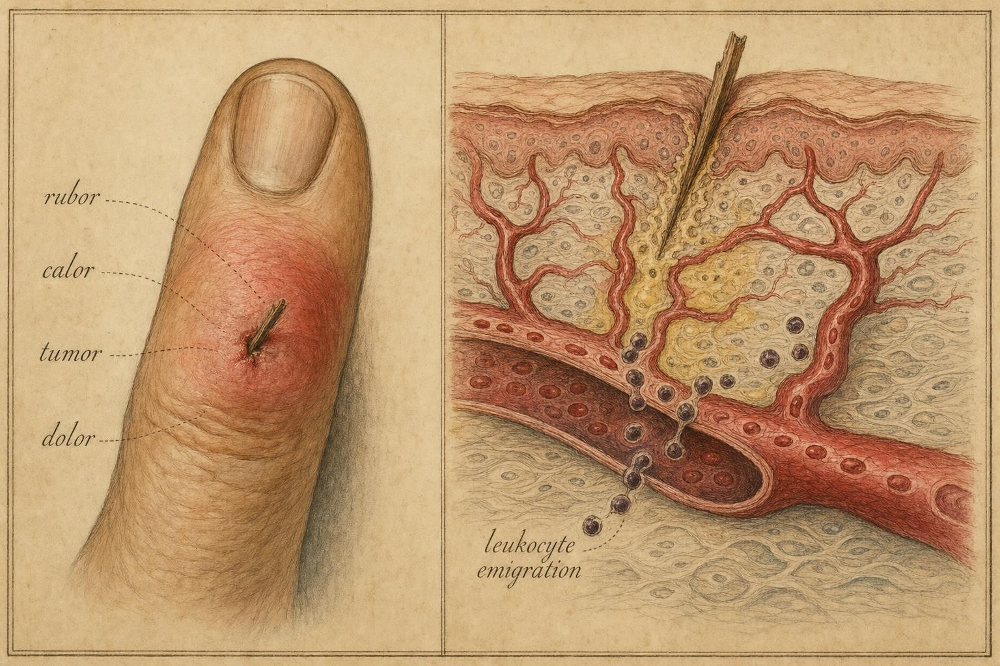
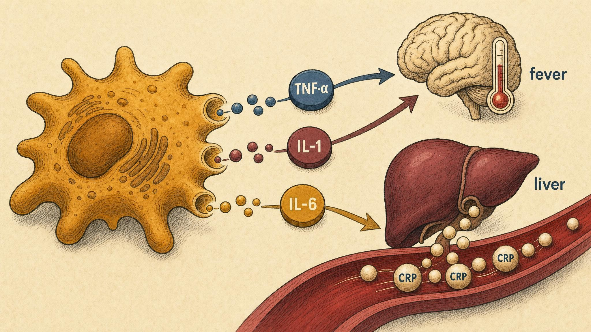

The Fire Within: What Inflammation Actually Is
Translating four ancient signs into the vascular, cellular, and molecular machinery beneath them.
Press a splinter into the pad of your thumb and wait an hour. The skin around the entry point turns pink, then frankly red. It grows warm to the touch of your other hand. A small dome of swelling rises. And it hurts , a throbbing tenderness that makes you guard the thumb and stop using it. You have, without any instruction from your conscious brain, launched one of the oldest and most tightly choreographed programs in animal physiology.
Nothing about that sequence is vague or accidental. Every visible change is the surface expression of a specific event happening in the blood vessels and tissue beneath your skin. This chapter is about learning to read those signs , to look at a red, swollen thumb and see, underneath it, dilating arterioles, leaking capillaries, migrating cells, and a cloud of chemical messengers doing exactly what they evolved to do.
The same underlying program runs whether the trigger is a splinter, a twisted ankle on a curb, or a virus multiplying in the tissue lining your throat. Roll your ankle stepping off a sidewalk and, within an hour, the joint is puffy, warm, and too tender to bear weight, even though no bacterium is involved anywhere in the process. Wake up with a scratchy, raw throat after a viral cold and swallow, and you will feel the same throbbing soreness, see the same redness if you look in a mirror, and notice the same reluctance to swallow normally. Three completely different triggers, one splinter carrying bacteria, one mechanical wrench of a ligament, one virus with no bacteria at all, and yet the tissue answers with the same five-part signature every time. That constancy is the clue that inflammation is not a disease-specific reaction but a general-purpose program, built once by evolution and reused for every kind of tissue insult. We will return to the sprained ankle and the sore throat repeatedly in this chapter, using them as worked examples to show that the same molecular machinery underlies injuries that feel, on the surface, nothing alike.
An old flame with a written record
Inflammation is one of the few concepts in modern immunology whose clinical description predates the microscope by nearly two thousand years. In the first century CE, the Roman encyclopedist Aulus Cornelius Celsus catalogued four cardinal signs of what he called inflammatio , literally, "setting on fire." In the original Latin they are rubor (redness), calor (heat), tumor (swelling), and dolor (pain). Centuries later the physician Galen is traditionally credited with adding a fifth: functio laesa, loss of function , the injured part stops working properly.
What is remarkable is not that ancient physicians noticed these signs; anyone with a splinter notices them. What is remarkable is that each of the five maps cleanly onto a physiological mechanism we can now name with precision. The nineteenth-century pathologists Augustus Waller and Julius Cohnheim, peering through early microscopes at the transparent webbing of a frog's foot and a living mesentery, watched white blood cells stick to vessel walls and crawl out into tissue , the first direct observation of the cellular events behind the outward redness and swelling (Function review, 2026). The visible and the mechanistic finally shook hands.
It is worth stating the thesis of the entire course early, because this chapter is where it becomes concrete. In Chapter 1 we introduced innate immunity , the fast, non-specific, evolutionarily ancient arm of host defense that recognizes broad danger signals rather than specific pathogens. Inflammation is what tissue-level innate activation looks like. When you can see redness and swelling with the naked eye, you are watching the innate response render itself visible. Ronald Medzhitov, in a pair of influential reviews, reframed inflammation not as a malfunction to be suppressed but as "a coordinated physiological program" whose purpose is to deliver defensive resources to a site of infection or injury and to restore tissue homeostasis afterward (Medzhitov, 2008, 2010).
Notice, too, what the definition does not require. It does not require an infection. It does not require bacteria, viruses, or any living microbe at all. A twisted ankle contains no pathogen whatsoever, yet the tissue mounts a full inflammatory response, complete with redness, heat, swelling, and pain, because the trigger that inflammation actually detects is not "microbe present" but "tissue damaged or danger signaled." Cells that die by injury, rather than by the orderly, quiet process of programmed cell death, spill their contents into the surrounding space. Fragments of DNA, adenosine triphosphate (ATP, the cell's energy currency) that normally lives only inside the cell, and fragments of the cell's internal skeleton all leak out and are picked up by pattern-recognition receptors on nearby sentinel cells as evidence that something has gone wrong nearby. Immunologists call these leaked, damage-associated signals damage-associated molecular patterns (DAMPs), a deliberate parallel to the pathogen-associated molecular patterns (PAMPs) introduced in Chapter 1 as the microbial signatures that innate receptors detect. The same downstream machinery, the same vasodilation, the same leaky vessels, the same recruited neutrophils, fires whether the initiating alarm is a PAMP from a splinter's bacteria or a DAMP from a mechanically torn ligament fiber. This is why the sprained ankle and the infected splinter wound look so much alike under the skin: the tissue's alarm system does not much care what tripped it, only that something did.
This distinction between infectious and sterile triggers matters because it corrects a common misconception. Many people equate inflammation with infection, assuming that redness and swelling always mean germs are present and multiplying. They do not. Inflammation is better understood as the tissue's generic damage-control response, a response that infection happens to be extremely good at triggering, but that mechanical injury, chemical irritation, extreme heat or cold, and even normal wound healing can trigger just as effectively. Keeping this straight will matter later in the course, when we discuss chronic diseases, such as atherosclerosis and some forms of arthritis, in which the "damage" being sensed is a build-up of the body's own molecules rather than any external invader.

The visible signs (left) and their microscopic causes (right), in the idiom of a classical pathology plate." data-image-idx="0" style="display:block;max-width:100%;max-height:75vh;height:auto;width:auto;margin:0 auto;cursor:pointer;">The vascular events: dilation and leak
Almost everything you can see and feel in acute inflammation comes down to two changes in the small blood vessels serving the injured tissue: they widen, and they become leaky. Learn these two events well, because between them they account for three of the five classic signs.
Before tracing the chemistry, it helps to have the plumbing clearly in view. Blood leaves the heart in arteries, which branch into progressively smaller arterioles, tiny vessels whose walls contain a coat of smooth muscle that can contract or relax to narrow or widen the tube. Arterioles feed into capillaries, vessels only a single cell layer thick, thin enough for oxygen, nutrients, and immune cells to cross into tissue. Capillaries drain into small venules, which is where, as you will see shortly, most of the interesting leukocyte traffic actually happens. The inner lining of every one of these vessels, from artery to vein, is a continuous single-cell sheet called the endothelium. Think of the endothelium as the tissue's border control: in the resting state it is a fairly quiet, non-adhesive, tightly sealed wall, and during inflammation it transforms into an actively signaling, sticky, leaky gateway. Almost the entire vascular story of inflammation is the story of that transformation.
Vasodilation , the source of redness and heat
Vasodilation is the relaxation of the smooth muscle in the walls of arterioles, the small arteries that feed a capillary bed. When these vessels relax and widen, more blood flows into the region , a state called hyperemia. The consequences are immediate and observable. More blood carrying oxygenated red cells near the skin surface produces rubor, the redness. That blood arrives from the body's warm core, so the tissue also rises toward core temperature and feels warm , calor. In a superficial injury the heat you feel is quite literally the temperature of your internal circulation, delivered to the surface in greater volume than usual.
Vasodilation is driven by chemical mediators released within seconds to minutes of tissue damage. Among the fastest actors is histamine, stored preformed in the granules of mast cells , sentinel cells that sit in tissues, especially near vessels and body surfaces. When mast cells sense danger, they degranulate, dumping histamine into the surrounding space, where it acts on vessel walls in seconds. Lipid-derived mediators follow: prostaglandins and leukotrienes, synthesized on demand from membrane fatty acids, sustain and amplify the vasodilation over the following minutes and hours (Function review, 2026). We will meet prostaglandins again as the direct molecular target of aspirin and ibuprofen.
It is worth pausing on the biochemistry of that last sentence, because it explains why a family of everyday medicines works at all. Prostaglandins are built from a fatty acid called arachidonic acid, which sits stored in the membranes of nearly every cell in the body. When a cell is damaged or activated, an enzyme called phospholipase A2 clips arachidonic acid free of the membrane. A second enzyme, cyclooxygenase (COX), then converts that arachidonic acid into prostaglandins. There are two main versions of this enzyme: COX-1, present in most tissues most of the time and involved in everyday housekeeping tasks such as protecting the stomach lining, and COX-2, which is strongly induced at sites of inflammation. Nonsteroidal anti-inflammatory drugs, the family that includes aspirin and ibuprofen, work by blocking cyclooxygenase enzymes directly, which is why they reduce prostaglandin-driven redness, warmth, swelling, and pain all at once, and why blocking COX-1 too aggressively can cause stomach irritation as a side effect. This mechanistic point, not the brand names, is what the rest of the course will build on; specific medication choices remain a conversation between a patient and a clinician.
Increased permeability , the source of swelling
The second vascular event is an increase in vascular permeability. Normally the endothelial cells lining a capillary form a fairly tight barrier; water and small solutes pass, but large plasma proteins are mostly retained in the blood. During inflammation, the same mediators , histamine, then prostaglandins and leukotrienes , cause endothelial cells to contract slightly and pull apart at their junctions, opening gaps between them. Protein-rich plasma now escapes from the vessel into the surrounding tissue.
This escaped fluid is called an exudate, and its accumulation in the tissue produces tumor, the swelling. The physics is worth making explicit, because it is elegant. Fluid distribution across a capillary wall is governed by opposing pressures, a balance physiologists call Starling forces after the scientist who first described them: hydrostatic pressure, the physical push of blood pressure forcing fluid out through the vessel wall, and oncotic (osmotic) pressure, generated mostly by dissolved plasma proteins like albumin, which draws water back in by simple osmosis, the tendency of water to move toward a region of higher dissolved-particle concentration. In a healthy, uninjured capillary, these two forces are nearly balanced, with a small net outward filtration that the lymphatic system, a separate drainage network of vessels running alongside the blood vessels, quietly collects and returns to the bloodstream. When permeability rises and proteins leak into the tissue, they drag the osmotic gradient out of the vessel and into the tissue with them. Now water follows the proteins into the tissue and stays there, because the tissue itself has become the more concentrated compartment. The lymphatic vessels try to keep up, carrying the excess fluid and protein away, but during active inflammation the leak outpaces the drainage, and swelling accumulates. The swelling of an inflamed thumb, or an inflamed ankle, is protein-laden plasma that has crossed a barrier it normally could not cross, arriving faster than the lymphatics can clear it.
Medzhitov (2008) frames this leakage not as damage but as delivery: the same permeability that produces swelling is the mechanism by which the blood's defensive plasma proteins , complement, clotting factors, antibodies, acute-phase proteins , gain access to the tissue where the threat lives. The swelling is the visible cost of an intentional supply run.
Return now to the twisted ankle. There is no splinter, no puncture, and no bacterium, yet within the hour the joint is visibly puffy and shiny-skinned. The mechanism is identical to the one just described. Torn ligament fibers and crushed small blood vessels release DAMPs and directly rupture capillaries, mast cells resident in the joint capsule degranulate, histamine and prostaglandins flood the local tissue, arterioles widen, venules leak, and protein-rich fluid pools in the loose connective tissue around the joint, which happens to have a great deal of room to swell into. This is also why the standard first-aid advice for a fresh sprain, rest, ice, compression, elevation, works on vascular physiology rather than mysticism: cold constricts vessels and blunts the vasodilation and permeability increase at their source, compression physically opposes fluid accumulation, and elevation uses gravity to assist the lymphatic drainage that is otherwise overwhelmed. None of this stops the inflammatory program; it simply dampens its magnitude while the underlying repair process, which Chapter 4 will cover, gets underway.
The cellular events: getting white cells to the scene
Vasodilation and leak set the stage; the cellular events are the main performance. The point of an inflammatory response is ultimately to bring leukocytes , white blood cells , from the circulation into the tissue, where they can destroy pathogens and clear debris. Slowing the blood down (a paradoxical effect of vasodilation, as widened vessels reduce flow velocity even while increasing total flow) gives circulating cells time to make contact with the vessel wall.
This is the sequence Cohnheim first watched under his microscope, now understood molecularly as a multi-step cascade, and it is worth walking through slowly because nearly every anti-inflammatory drug and every autoimmune disease you will encounter later in the course interferes with one of its steps. Neutrophils , the most abundant white cell in human blood and the first responder to bacterial infection , spend their circulating lives being swept along in the fast-moving center of the bloodstream. The first change inflammation produces is a slowing of flow, partly because widened vessels reduce flow velocity even while increasing total volume, and partly because plasma loss through the leaky wall thickens the remaining blood. Slower flow lets the denser white cells drift toward the vessel wall, a physical shift called margination.
Once marginated, a neutrophil begins to roll along the vessel wall, tumbling end over end rather than gliding smoothly, because it is being caught and released, caught and released, by a family of adhesion molecules called selectins. Selectins are expressed on activated endothelium within minutes of a stimulus and bind their partner sugars on the neutrophil surface loosely and briefly, enough to slow the cell to a rolling crawl but not enough to stop it outright. Rolling is a scouting phase: it brings the neutrophil into close, prolonged contact with the vessel wall so that it can sample local chemical signals, chiefly small chemoattractant proteins called chemokines (a subfamily of cytokines specialized for directing cell movement) that are displayed on the endothelial surface. Detecting these chemokines flips a switch inside the neutrophil that activates a second, much stronger class of adhesion molecule called integrins. Integrins grip their endothelial partner proteins with far higher affinity than selectins do, and the rolling cell suddenly arrests, stopping dead against the vessel wall against the force of flowing blood.
An arrested neutrophil then squeezes itself between two adjacent endothelial cells and out through the vessel wall entirely, a process called transmigration, or diapedesis, a term built from Greek roots meaning "to leap through." This is one of the more remarkable feats in ordinary human physiology: a cell roughly ten micrometers across deforming its own nucleus and squeezing through a gap barely wide enough to admit it, without permanently damaging either itself or the vessel it just left. Once free in the tissue, the neutrophil does not wander randomly. It reads a spatial gradient of chemoattractant molecules, which are more concentrated near the site of damage or infection and more dilute further away, and crawls up that gradient toward the highest concentration, a directed movement called chemotaxis. Bacterial products themselves, fragments of the complement system introduced in Chapter 1, and locally produced chemokines all serve as chemoattractants, layering several independent trails that all point toward the same destination.
Arrival is not the end of the job, only the beginning of it. A neutrophil that reaches a bacterium engulfs it by wrapping its own membrane around the microbe, pulling it inside an internal pocket called a phagosome, a process called phagocytosis, literally "cell eating." The phagosome then fuses with internal packets of destructive enzymes and acid, and with an enzyme complex that generates a burst of highly reactive, toxic oxygen molecules known as the respiratory burst, all aimed at dismantling the trapped microbe from the inside. Neutrophils have a second, more dramatic weapon as well: under strong stimulation, some neutrophils die in a way that releases a web of their own decondensed DNA studded with antimicrobial proteins, called a neutrophil extracellular trap (NET), which physically snares and kills microbes in the surrounding fluid even after the cell that made it is gone. A single spent neutrophil, in other words, can keep fighting after its own death.
Neutrophils are the shock troops, fast to arrive and fast to die, typically surviving only hours to a couple of days once they have left the bloodstream. Close behind them, following a similar rolling-adhesion-transmigration sequence over a slightly longer timescale, come monocytes, a second type of circulating white cell that, upon entering tissue, matures into a macrophage. Macrophages are larger, longer-lived, and more versatile than neutrophils. They continue the work of phagocytosis, but they also serve as the tissue's clean-up crew, engulfing dead neutrophils and cellular debris once the acute battle has been won, and, as the next section shows, they are themselves among the most important sources of the chemical signals that organize the whole response in the first place. If neutrophils are the first responders who run in and fight the fire directly, macrophages are the incident commanders who arrive slightly later, coordinate the ongoing response, and stay on site long after the flames are out to manage the cleanup.
Return again to the sprained ankle. Even without a single bacterium present, this entire cellular sequence unfolds, because the DAMPs released by torn tissue and the cytokines released by activated mast cells and resident macrophages are, to a rolling neutrophil, functionally indistinguishable from an infection's chemical signature. Neutrophils arrive at a sterile sprain within hours, not to kill a microbe that is not there, but to begin clearing damaged tissue debris and to set the stage, through the signals they themselves release, for the repair phase covered in Chapter 4. This is a second demonstration of the point made earlier: the cellular recruitment machinery answers the general question "is there tissue damage here," not the narrower question "is there a pathogen here."
The endothelium is not a passive pipe in this story. It must be activated to display the selectins and integrin-binding partners that catch passing leukocytes in the first place, and it must be told, chemically, which chemoattractants to display and in what amount. That activation is a central job of the cytokines we are about to meet. This is the hinge of the chapter: the vascular and cellular events described so far do not happen on their own , they are commanded by a chemical vocabulary of signaling proteins, and that vocabulary is itself switched on by a single master regulator inside the cell. Learn both the vocabulary and the switch now and they will pay dividends for the rest of the course.
Where does the pain come from?
You may have noticed while playing with the mapper that pain does not track blood flow. Dolor has several overlapping causes, and all of them are chemical or mechanical rather than mysterious. Peripheral nerve endings specialized to detect potentially damaging stimuli are called nociceptors (from the Latin nocere, "to harm"); firing a nociceptor is what your nervous system interprets as pain. In healthy, uninjured tissue, nociceptors have a fairly high firing threshold, meaning ordinary pressure, gentle heat, or light touch does not activate them. Several of the chemical mediators already introduced in this chapter change that threshold directly. Prostaglandins do not usually excite a nociceptor outright; instead they sensitize it, lowering its firing threshold so that stimuli that would previously have gone unnoticed, a light touch, ordinary body heat, the pressure of a sock, now register as pain. This phenomenon has a name, hyperalgesia, an exaggerated pain response to a normally painful stimulus, and a close cousin, allodynia, pain from a stimulus that is not normally painful at all, such as a bedsheet brushing an inflamed sunburn. This is precisely why an inflamed area is tender to a touch that would not bother healthy skin nearby: the tissue's alarm threshold has been chemically lowered, not because the touch itself is more forceful, but because the sensors have become more excitable.
Other mediators act on nociceptors more directly. Bradykinin, a small peptide generated from a blood protein precursor during tissue injury, is among the most potent pain-producing chemicals known and activates nociceptors outright rather than merely sensitizing them; it is also a vasodilator in its own right, adding to the redness and warmth already produced by histamine and the prostaglandins. Once a nociceptor does fire, it does not simply send a one-way message to the spinal cord and brain. Many nociceptors also release their own chemical signal locally, a neuropeptide called substance P, back into the surrounding tissue. Substance P further dilates local vessels, further increases vascular permeability, and further activates mast cells, in effect allowing the nervous system to add its own fuel to the inflammatory fire it is simultaneously reporting on, a feedback loop physiologists call neurogenic inflammation. Second, and separately from any of this chemistry, the physical swelling itself stretches tissue and presses on nerve endings mechanically, adding a component of pain that has nothing to do with chemical sensitization at all; this is one reason a tensely swollen joint often throbs with each heartbeat, as the pulse of blood pressure briefly stretches already-taut tissue a little further with every beat.
The sore throat makes this concrete in a different tissue. Swallowing draws the inflamed, swollen pharyngeal tissue across itself under mechanical pressure, and because local nociceptors have been sensitized by prostaglandins and directly triggered by bradykinin released amid the viral infection, an act that is completely painless in a healthy throat, the simple mechanical stretch and contact of swallowing, becomes sharply painful. The throat also demonstrates tumor and functio laesa in miniature: the visible redness a clinician sees on examination is rubor; the swelling of the tonsils and posterior pharynx is tumor; and the reluctance to swallow, speak, or eat that follows is functio laesa, a real and measurable, if temporary, loss of normal throat function.
The final classic sign, functio laesa , loss of function , is the emergent consequence of the other four. A swollen, painful thumb that you instinctively guard is a thumb you are not using; a throat too sore to swallow comfortably is a throat you use as little as possible; a sprained ankle too tender to bear weight is an ankle you keep off the ground. Medzhitov (2010) points out that this functional cost is not merely incidental damage; a transient, local decline in tissue function is part of the adaptive logic of inflammation, forcing rest and reallocating resources toward repair. The fire has a purpose, and paying a temporary functional tax is part of the deal.
The chemical orchestra: cytokines
We have referred repeatedly to "chemical mediators" and "signals." It is time to name the most important class of them. Cytokines are small secreted proteins that cells use to communicate with one another , the hormones of the immune system, though they generally act over shorter distances. A cell releases a cytokine; nearby cells bearing the matching receptor detect it and change their behavior. Cytokines are how a single damaged cell can raise a tissue-wide, and ultimately body-wide, alarm.
The course will introduce many cytokines, but three pro-inflammatory cytokines recur so often, and drive so much of what follows, that you should treat them as named characters with distinct personalities. They are TNF-α (tumor necrosis factor alpha), IL-1 (interleukin-1), and IL-6 (interleukin-6). Gabay and Kushner (1999), in a landmark review, identify precisely this trio as the drivers of the systemic acute-phase response , the body-wide reaction to inflammation we will trace shortly.
Nuclear factor kappa B: the master switch behind the cytokines
Before meeting the three cytokines individually, it helps enormously to understand where they actually come from inside a cell, because the same answer explains almost every one of them at once. A macrophage does not keep a stockpile of TNF-alpha, interleukin-1, and interleukin-6 sitting ready-made in a drawer. It has to manufacture them from scratch, on demand, by switching on the genes that encode them and reading those genes into new protein. The switch that does this for an enormous share of the genes involved in inflammation is a transcription factor called nuclear factor kappa B (NF-kB). A transcription factor is a protein that binds to DNA and controls whether a nearby gene is copied into messenger RNA and ultimately translated into protein, so calling NF-kB a "master switch" is not loose language: it is a literal description of a protein sitting on DNA and deciding whether inflammatory genes get read at all. In an unstimulated, resting cell, NF-kB is kept deliberately inactive. It sits in the cell's main body, the cytoplasm, bound to an inhibitory protein that holds it there and blocks it from doing anything. When a pattern-recognition receptor on the cell surface, such as a Toll-like receptor, detects a pathogen-associated molecular pattern, or when a receptor detects a cytokine such as IL-1 or TNF-alpha already circulating nearby, that detection event triggers an internal enzyme cascade that tags the inhibitory protein for destruction. Once the inhibitor is degraded, NF-kB is released, moves into the cell's nucleus, where the DNA lives, and binds directly to the control regions of a long list of inflammatory genes, switching many of them on simultaneously. Among the genes NF-kB activates are the genes for TNF-alpha, interleukin-1, and interleukin-6 themselves, along with the genes for the adhesion molecules that activated endothelium displays to catch rolling neutrophils and the enzyme that produces inflammatory prostaglandins. A single transcription factor, in other words, sits at the convergence point of nearly every thread this chapter has traced so far (Lawrence, 2009).
Two features of this arrangement are worth holding onto because they recur constantly in both healthy physiology and disease. First, NF-kB activation is fast, because it does not require building the transcription factor itself from scratch, only releasing a supply that is already sitting, primed and waiting, inside the cytoplasm. This is part of why the inflammatory response can escalate within minutes of a detected threat rather than hours. Second, several of NF-kB's own protein products, including TNF-alpha and IL-1, are themselves capable of triggering more NF-kB activation in neighboring cells, creating a self-amplifying feed-forward loop that can rapidly turn a single activated cell into a coordinated, multi-cell tissue response. That amplifying loop is precisely what makes inflammation powerful, and, as later chapters will explore, precisely what makes it dangerous when it fails to shut off on schedule. Many existing and experimental anti-inflammatory drugs, including corticosteroids, work in part by interfering somewhere along this NF-kB pathway, which is one reason a single class of drug can blunt fever, swelling, redness, and pain all at once: it is disabling the shared switch that turns on the genes responsible for all four.
TNF-α , the fast, forceful alarm
Tumor necrosis factor-alpha (TNF-α) is among the earliest cytokines released, produced largely by activated macrophages , the resident tissue phagocytes introduced in Chapter 1, and, to a lesser extent, by mast cells and other immune cells. It gets its unusual name from its original discovery context, an experimental factor found to cause hemorrhage and death in tumors, but its everyday physiological job has nothing to do with cancer specifically; it is simply the earliest and one of the most forceful of the alarm cytokines released whenever NF-kB is activated in a macrophage. TNF-α is released within the first hour of a stimulus and is a powerful activator of endothelium: it induces the adhesion molecules that let leukocytes stick and transmigrate, directly enabling the cellular recruitment described above, and it does so specifically by driving NF-kB activation inside the endothelial cells themselves, so that one activated macrophage can chemically instruct the entire local vessel wall to become sticky within a very short window. It also acts systemically, contributing to fever and, in extreme circumstances such as severe sepsis, a body-wide, dysregulated version of the same response driven by overwhelming infection, to the dangerous drop in blood pressure caused by widespread vasodilation and vascular leak occurring simultaneously throughout the body rather than confined to one tissue. TNF-α's potency made it the first cytokine to be targeted therapeutically; TNF-blocking biologic drugs, antibody-based medicines that bind TNF-alpha and prevent it from reaching its receptor, revolutionized the treatment of rheumatoid arthritis and inflammatory bowel disease by damping an otherwise chronically overactive version of the exact pathway described in this chapter , a preview of the therapeutic theme that runs through this course. (As with every drug we mention, we describe mechanism only; specific treatment decisions belong to a physician.)
IL-1 , innate immunity's signature messenger
Interleukin-1 (IL-1) exists in two active forms, IL-1α and IL-1β, and it is so central to innate defense that Charles Dinarello, who spent a career studying it, argued the IL-1 family "is more closely linked to innate immunity than any other cytokine family" (Dinarello, 2009). Part of what makes this claim precise is that IL-1 shares its downstream signaling machinery with the Toll-like receptors (TLRs) , the pattern-recognition receptors, introduced in Chapter 1, that let innate cells detect microbes. In other words, the receptor that senses a bacterium and the receptor that senses IL-1 speak the same intracellular language and both ultimately activate NF-kB, which is exactly why IL-1 can substitute for, or amplify, a direct pathogen detection signal. Dinarello details how IL-1β induces cyclooxygenase-2 (the enzyme that makes inflammatory prostaglandins, introduced above), drives expression of adhesion molecules, and stimulates nitric oxide synthesis, a gas-like signaling molecule that contributes further to vasodilation, a compact list that, you will notice, includes several mechanisms behind the classic signs we have already dissected. IL-1β is also unusual among cytokines in how it is made: it is first produced as an inactive precursor protein and must be cleaved into its active form by an intracellular enzyme complex called the inflammasome, an additional checkpoint that lets a cell hold IL-1 in reserve until a second, confirming danger signal arrives. IL-1 is also a principal endogenous pyrogen ("fever-producer arising from within the body," as opposed to an exogenous pyrogen such as a bacterial toxin): it acts on the hypothalamus, the brain region that regulates body temperature, to raise the body's temperature set-point, producing fever, the same fever a sore throat or a systemic infection often brings on.
IL-6 , the systemic broadcaster
If TNF-α and IL-1 are the local alarm bells, interleukin-6 (IL-6) is the messenger that carries the news to the rest of the body. IL-6 is described by Tanaka and colleagues (2014) as a prototypical pleiotropic cytokine, from Greek roots meaning "many turnings," a single protein with many different downstream effects depending on which cell type receives its signal. It signals through the JAK/STAT3 pathway, a receptor-linked cascade in which a family of enzymes called Janus kinases, attached to the inside of the IL-6 receptor, phosphorylate and activate a transcription factor called STAT3, which then travels to the nucleus and switches on a new set of genes, structurally a very similar strategy to what NF-kB does for TNF-alpha and IL-1, but running through an entirely separate set of proteins. Its most consequential job for our purposes is what it does at the liver: IL-6 is the principal driver of hepatic (liver-related) synthesis of the acute-phase proteins, a group of blood proteins whose concentration changes sharply during systemic inflammation, including C-reactive protein, serum amyloid A, and fibrinogen, a clotting protein (Tanaka et al., 2014). It also stimulates antibody production by driving the maturation of antibody-secreting cells and shapes the behavior of T cells, the coordinating cells of adaptive immunity , a bridge, which we will cross later in the course, between the fast innate inflammation covered here and the slower, highly specific adaptive immune response.
IL-6 also happens to be the cytokine most directly responsible for a cluster of whole-body symptoms sometimes called sickness behavior: the fatigue, appetite loss, and general malaise that accompany a bad cold or the day after a significant injury. Acting on the brain, circulating IL-6, alongside IL-1 and TNF-alpha, is thought to contribute to the sense of being run-down that has no local site you can point to, distinct from the sharp, localized pain of the throat or the ankle itself. This is a useful reminder that inflammation, even when it starts as a strictly local event, rarely stays local; the same cytokine that flags a sore throat to the liver for a CRP response is also, at the same moment, quietly nudging the brain toward rest.
A crucial idea to carry forward: these same three molecules will reappear throughout the course wearing different costumes. IL-6 released by contracting muscle during exercise behaves as a beneficial metabolic signal. The same cytokines, chronically and inappropriately elevated, become drivers of atherosclerosis, insulin resistance, and depression. Peter Libby (2008) frames inflammation as "a coordinated series of common effector mechanisms" that serve host defense in one context and drive chronic disease in another. The vocabulary you are learning here is not just about splinters; it is the vocabulary of half of modern medicine.

From local macrophage to whole-body response: the three pro-inflammatory cytokines and their downstream targets." data-image-idx="1" style="display:block;max-width:100%;max-height:75vh;height:auto;width:auto;margin:0 auto;cursor:pointer;">CRP: reading the fire from a drop of blood
The chain of causation we have built now delivers us to the single most-ordered inflammatory blood test in clinical medicine. C-reactive protein (CRP) is an acute-phase protein synthesized by the liver in response to IL-6 (with contributions from IL-1 and TNF-α upstream). It gets its name from an old and somewhat accidental discovery: the protein was first identified because it binds to a component of certain bacteria called the C-polysaccharide, and once bound, it can flag the bacterium for destruction by activating the complement system, the cascade of blood proteins introduced in Chapter 1 that helps punch holes in microbial membranes and mark them for engulfment. That original binding function turns out to be a minor part of the story; CRP's real value to you as a learner, and to a clinician ordering the test, lies almost entirely in what its blood concentration reveals about the process that produced it, not in what the protein does once it is there.
Because IL-6 rises when inflammation is present anywhere in the body, and because the liver dutifully converts that IL-6 signal into circulating CRP, a blood CRP level serves as a convenient downstream readout of the magnitude of systemic inflammation (Gabay & Kushner, 1999). It is essential to be precise about the direction of causation here, because it is easy to get backward: CRP does not cause inflammation, and elevated CRP is not itself the fire. CRP is smoke, not flame, a passive marker manufactured by the liver strictly in proportion to the IL-6 signal it receives, with essentially no independent role in starting the process that produces it. CRP is prototypical among acute-phase reactants: its concentration can climb more than a thousandfold within a day or two of a strong inflammatory stimulus and fall again quickly, with a half-life in the blood of roughly nineteen hours, once the stimulus resolves, making it a responsive, real-time gauge rather than a slow-moving one. Contrast this with an acute-phase protein like fibrinogen, which also rises with inflammation but does so more slowly and modestly; the speed and sheer magnitude of the CRP response is precisely what makes it clinically convenient to measure.
But CRP's very usefulness invites a critical error, and you should learn to avoid it now. CRP tells you that systemic inflammation is present and roughly how much. It does not tell you where the inflammation is or what is causing it. A high CRP is equally consistent with pneumonia, a flaring autoimmune joint, a healing surgical wound, or a smoldering vascular plaque. It is a sensitive but non-specific signal , a smoke detector that reports fire somewhere in the house without naming the room. In the language of clinical epidemiology, CRP is far more valuable as a predictive and monitoring marker than as a stand-alone diagnostic one (CRP review, 2023). A clinician might order a CRP to confirm that a suspected infection is, in fact, producing a measurable inflammatory response, or to track whether a known infection is improving on treatment, watching the number fall over successive days, without ever expecting the number alone to name the disease.
This distinction matters enormously in cardiovascular medicine. A high-sensitivity version of the assay (hs-CRP), which simply measures the same protein with a more precise assay capable of detecting the lower concentrations relevant outside acute infection, quantifies the low-grade, smoldering inflammation associated with atherosclerosis, the build-up of fatty, inflamed plaque inside artery walls, and independently predicts future cardiovascular events, which is why it has been incorporated into risk-estimation algorithms alongside cholesterol and blood pressure (CRP review, 2023). The same review notes that interventions which lower CRP , statins, IL-1 inhibitors, and newer metabolic drugs , also lower cardiovascular risk, tightening the causal story linking inflammation to disease. Yet none of this makes CRP a diagnosis. It refines a probability. The clinical discipline is to treat CRP as one input into a judgment, never as a verdict , and this is precisely why self-interpretation of an isolated CRP value is discouraged in favor of professional evaluation that weighs it against the whole clinical picture, including symptoms, physical examination, and other laboratory findings that CRP alone cannot supply.
It is worth closing this section by returning to a distinction raised earlier in the chapter and stating it as plainly as possible, because confusing it is one of the most common errors a beginning student makes. Inflammation itself is not a disease, and it is not inherently harmful; it is the coordinated, purposeful defense and repair program this entire chapter has described, one your body runs correctly many times a week without you ever noticing, every small scrape, every minor irritation, every forgotten sore throat that resolves on its own within days. What CRP and the cytokines behind it measure is the activity level of that program at a given moment, not a verdict on whether it should be happening at all. A very high CRP during a genuine bacterial infection is the system working exactly as intended. The genuinely worrisome pattern, which Chapter 5 will examine in depth, is a persistently, mildly elevated CRP with no clear acute trigger at all, suggesting the program has been left running quietly in the background for months or years. Magnitude and duration, not the mere presence of inflammation, are what separate a healthy defense from a harmful one.
The arc of an acute inflammatory response
Let us assemble the pieces into a single narrative arc, using the splinter from the opening as our worked example. This is the shape you should be able to sketch from memory.
Trigger. The splinter introduces bacteria and physically damages cells. Damaged cells release danger signals, DAMPs, as described earlier; resident sentinels , macrophages and mast cells , detect microbial patterns and damage signals alike through their pattern-recognition receptors and are activated. This is innate recognition, the Chapter 1 material, happening in real time. Run the same first step for a sprained ankle and only the trigger changes: mechanically torn tissue releases DAMPs with no microbial signature involved at all, and resident sentinels in the joint capsule respond just the same. Run it for the sore throat and the trigger is a virus replicating inside the cells lining the pharynx, detected by pattern-recognition receptors tuned to viral genetic material rather than bacterial surface molecules; the downstream steps proceed almost identically regardless.
Mediator release. Mast cells degranulate within seconds, releasing histamine. Activated macrophages detect the danger signal, which triggers the release of NF-kB from its inhibitor inside the cell; NF-kB moves to the nucleus and switches on the genes for TNF-α and IL-1, which the macrophage then secretes. Enzymes generate prostaglandins and leukotrienes from membrane lipids via the cyclooxygenase pathway described earlier. A local chemical cloud forms, and because TNF-alpha and IL-1 can themselves trigger NF-kB activation in neighboring cells, that cloud thickens quickly through the feed-forward loop already described.
Vascular response. The mediators dilate arterioles (producing rubor and calor) and increase capillary permeability, letting protein-rich exudate into the tissue faster than the lymphatics can drain it (producing tumor). Prostaglandins and bradykinin sensitize and directly trigger nociceptors, and the swelling presses on nerves mechanically (producing dolor). The guarded, throbbing thumb, the ankle that will not bear weight, the throat that resists swallowing, all go unused (functio laesa).
Cellular recruitment. TNF-α and IL-1 activate the local endothelium to display selectins and integrin ligands. Neutrophils marginate, roll, adhere, transmigrate, and follow chemotactic gradients to the site of trouble, where they phagocytose bacteria (in the splinter and the sore throat) or clear damaged tissue debris (in the ankle sprain, where there is no microbe to engulf). This is the whole point of the exercise , everything before it was logistics, and monocyte-derived macrophages arrive shortly after to sustain and eventually resolve the response.
Systemic response. IL-6, diffusing into the bloodstream, reaches the brain (contributing with IL-1 and TNF-α to fever and to the fatigue and malaise of sickness behavior) and the liver, where it commands synthesis of acute-phase proteins through the JAK/STAT3 pathway. Within a day, circulating CRP has risen , a systemic echo of a local event, now measurable in a blood draw, and the bone marrow releases additional neutrophils into circulation, a rise in the total white blood cell count called leukocytosis that is itself another common clinical clue that an inflammatory process is underway somewhere in the body. Medzhitov (2008) situates this along a spectrum from full-blown inflammation down to low-grade para-inflammation, a milder adaptive tissue response that hovers between homeostasis and classic inflammation and that will become important when we discuss chronic disease.
That is the arc: trigger → mediators (NF-kB activation and cytokine release) → vascular changes → cellular recruitment → systemic response. Every clinical sign, every lab value, and every drug target we encounter later hangs somewhere on this scaffold, and, as the sprained ankle and the sore throat both demonstrate, the same scaffold supports triggers as different as a mechanical tear, a bacterial puncture wound, and a virus, because the tissue is answering the general question of damage, not the narrow question of cause. What we have deliberately left for the next chapter is the ending. An acute inflammatory response is meant to be self-limiting , to flare, do its job, and then actively shut itself down, handing the tissue over to repair. The fire is supposed to go out.
Inflammation is not intrinsically bad or good , it is a coordinated physiological program whose value depends entirely on its regulation, its magnitude, and its timing.
Paraphrasing the framework of Medzhitov (2008, 2010)
Key Takeaways
- The five classic signs are mechanistic, not merely descriptive: rubor and calor come from vasodilation and increased blood flow; tumor comes from increased vascular permeability and protein-rich exudate; dolor comes from mediator-sensitized nociceptors plus mechanical pressure; functio laesa is the emergent, partly adaptive cost.
- Two vascular events explain most of what you see: vessels widen (vasodilation) and vessels leak (increased permeability), both driven by histamine, prostaglandins, and leukotrienes.
- Inflammation is tissue-level innate activation made visible; its ultimate purpose is to recruit leukocytes and deliver defensive plasma proteins to the site of injury.
- Nuclear factor kappa B (NF-kB) is the master transcription factor that switches on the genes for TNF-α, IL-1, IL-6, and the endothelial adhesion molecules that recruit leukocytes; pattern-recognition receptors and cytokine receptors alike converge on releasing it from its inhibitor so it can enter the nucleus and act.
- Three pro-inflammatory cytokines recur throughout the course: TNF-α (fast endothelial-activating alarm), IL-1 (innate immunity's signature messenger, matured by the inflammasome, and an endogenous pyrogen), and IL-6 (the systemic broadcaster that signals via JAK/STAT3 and drives hepatic acute-phase protein synthesis).
- Pain (dolor) arises from at least three overlapping mechanisms: prostaglandin-driven sensitization of nociceptors (hyperalgesia and allodynia), direct nociceptor activation by bradykinin, and mechanical pressure from swelling; activated nociceptors can themselves release substance P and add further vasodilation and permeability, a feedback loop called neurogenic inflammation.
- Inflammation is triggered by tissue damage in general, not only by infection: damage-associated molecular patterns (DAMPs) from sterile injuries such as a sprained ankle activate the same pathway as pathogen-associated molecular patterns (PAMPs) from an infected wound or a viral sore throat.
- CRP is a liver-made, IL-6-driven acute-phase protein that reports the magnitude of systemic inflammation. It is sensitive but non-specific , a predictive and monitoring marker, not a stand-alone diagnosis. An isolated CRP value warrants professional interpretation, not self-diagnosis.
- The acute arc runs: trigger → mediators → vascular changes → cellular recruitment → systemic response.
We have lit the fire and named its fuel. But a healthy inflammatory response is defined as much by its ending as its beginning , it must be actively extinguished so that repair can proceed. Chapter 4 turns to resolution: the specialized pro-resolving mediators, the switch from destruction to repair, and the central pathological question of the entire course , what happens when the fire never goes out.
References
Dinarello, C. A. (2009). Immunological and inflammatory functions of the interleukin-1 family. Annual Review of Immunology, 27, 519-550. https://doi.org/10.1146/annurev.immunol.021908.132612
Function review. (2026). Molecular mechanisms of acute inflammation: Systemic responses and kidney-specific pathophysiology. Function. https://journals.physiology.org/doi/full/10.1152/function.087.2025
Gabay, C., & Kushner, I. (1999). Acute-phase proteins and other systemic responses to inflammation. New England Journal of Medicine, 340(6), 448-454. https://doi.org/10.1056/NEJM199902113400607
Lawrence, T. (2009). The nuclear factor NF-kB pathway in inflammation. Cold Spring Harbor Perspectives in Biology, 1(6), a001651. https://doi.org/10.1101/cshperspect.a001651
Libby, P. (2008). Inflammatory mechanisms: The molecular basis of inflammation and disease. Nutrition Reviews, 65(12 Pt 2), S140-S146. https://doi.org/10.1111/j.1753-4887.2007.tb00352.x
Medzhitov, R. (2008). Origin and physiological roles of inflammation. Nature, 454(7203), 428-435. https://doi.org/10.1038/nature07201
Medzhitov, R. (2010). Inflammation 2010: New adventures of an old flame. Cell, 140(6), 771-776. https://doi.org/10.1016/j.cell.2010.03.006
Tanaka, T., Narazaki, M., & Kishimoto, T. (2014). IL-6 in inflammation, immunity, and disease. Cold Spring Harbor Perspectives in Biology, 6(10), a016295. https://doi.org/10.1101/cshperspect.a016295
C-reactive protein review. (2023). C-reactive protein: The quintessential marker of systemic inflammation in coronary artery disease , Advancing toward precision medicine. https://www.ncbi.nlm.nih.gov/pmc/articles/PMC10525787/